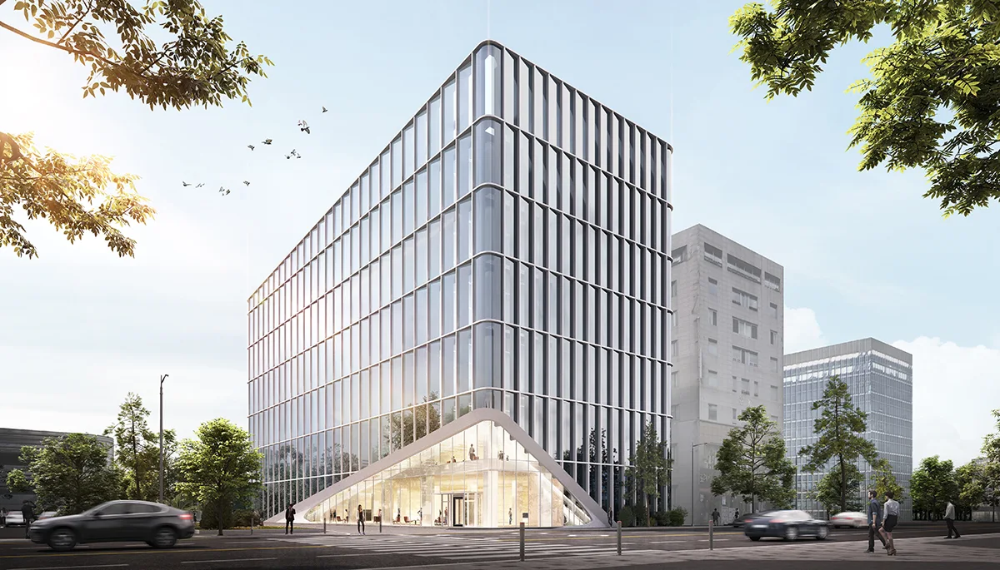

01
인천 제물포 르네상스 광역도 및 조감도 결과물
도시·개발 · 3D·VR
01 / THE STUDIO
02 / SELECTED WORK
도시·개발 · 3D·VR

건축 시각화 · 3D·VR

건축 시각화 · 인테리어

건축 시각화

3D·VR

건축 시각화

THE ART OF VISUALIZATION
03 / EXPERTISE
도면에 담긴 의도를 이해하고,
목적에 맞는 시각적 언어로 표현합니다.
조감도 · 투시도 · 경관심의
인테리어 · 공간 · 재료
광역도 · 도시 개발 · 분양
아이소메트릭 · 모델링 · 3D 데이터
HAVE A PROJECT IN MIND?
계획 중인 공간을 함께 이야기해 주세요.
Makegroupcg@naver.com ↗